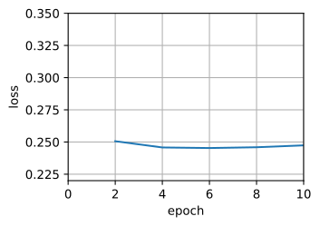
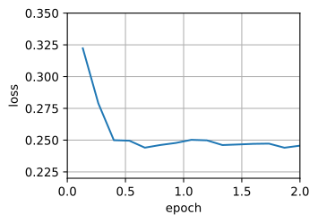
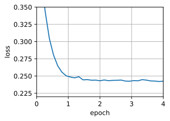

Minibatch Stochastic Gradient Descent¶
Cho đến nay, chúng ta đã gặp hai thái cực trong cách tiếp cận học dựa trên gradient: sec_gd dùng toàn bộ tập dữ liệu để tính gradient và cập nhật tham số, mỗi lần một lượt duyệt. Ngược lại, sec_sgd xử lý từng ví dụ huấn luyện một để tạo tiến triển. Mỗi cách đều có nhược điểm riêng. Gradient descent không đặc biệt hiệu quả về dữ liệu khi dữ liệu rất giống nhau. Stochastic gradient descent không đặc biệt hiệu quả về tính toán vì CPU và GPU không thể khai thác hết sức mạnh của vector hóa. Điều này gợi ý rằng có thể tồn tại một cách nằm giữa hai thái cực, và thực ra đó chính là điều chúng ta đã dùng từ trước đến nay trong các ví dụ đã thảo luận.
Vector Hóa và Bộ Nhớ Đệm¶
Cốt lõi của quyết định dùng minibatch là hiệu quả tính toán. Điều này dễ hiểu nhất khi xét việc song song hóa trên nhiều GPU và nhiều máy chủ. Trong trường hợp này, chúng ta cần gửi ít nhất một ảnh đến mỗi GPU. Với 8 GPU mỗi máy chủ và 16 máy chủ, chúng ta đã có kích thước minibatch không nhỏ hơn 128.
Mọi thứ tinh tế hơn một chút khi nói đến một GPU đơn lẻ hoặc thậm chí CPU. Các thiết bị này có nhiều loại bộ nhớ, thường có nhiều loại đơn vị tính toán và các ràng buộc băng thông khác nhau giữa chúng. Chẳng hạn, CPU có một số lượng nhỏ thanh ghi, rồi đến bộ nhớ đệm L1, L2 và trong một số trường hợp cả L3 (được chia sẻ giữa các lõi xử lý khác nhau). Các bộ nhớ đệm này có kích thước và độ trễ tăng dần (đồng thời băng thông giảm dần). Nói ngắn gọn, bộ xử lý có khả năng thực hiện nhiều phép toán hơn rất nhiều so với những gì giao diện bộ nhớ chính có thể cung cấp.
Thứ nhất, một CPU 2GHz với 16 lõi và vector hóa AVX-512 có thể xử lý tối đa \(2 \cdot 10^9 \cdot 16 \cdot 32 = 10^{12}\) byte mỗi giây. Khả năng của GPU dễ dàng vượt con số này 100 lần. Mặt khác, một bộ xử lý máy chủ tầm trung có thể không có nhiều hơn 100 GB/s băng thông, tức là ít hơn một phần mười mức cần thiết để giữ cho bộ xử lý luôn có dữ liệu. Tệ hơn nữa, không phải mọi truy cập bộ nhớ đều như nhau: giao diện bộ nhớ thường rộng 64 bit hoặc hơn (ví dụ trên GPU có thể đến 384 bit), do đó đọc một byte đơn lẻ phải chịu chi phí của một truy cập rộng hơn nhiều.
Thứ hai, có chi phí phụ đáng kể cho lần truy cập đầu tiên, trong khi truy cập tuần tự tương đối rẻ (điều này thường được gọi là đọc theo burst). Còn nhiều điều khác cần lưu ý, chẳng hạn như bộ nhớ đệm khi chúng ta có nhiều socket, chiplet và các cấu trúc khác. Xem bài viết Wikipedia này để thảo luận sâu hơn.
Cách giảm nhẹ các ràng buộc này là dùng một hệ phân cấp bộ nhớ đệm CPU thực sự đủ nhanh để cung cấp dữ liệu cho bộ xử lý. Đây là động lực chính đằng sau batching trong deep learning. Để đơn giản, hãy xét phép nhân ma trận-ma trận, chẳng hạn \(\mathbf{A} = \mathbf{B}\mathbf{C}\). Chúng ta có một số lựa chọn để tính \(\mathbf{A}\). Ví dụ, chúng ta có thể thử các cách sau:
- Chúng ta có thể tính \(\mathbf{A}_{ij} = \mathbf{B}_{i,:} \mathbf{C}_{:,j}\), tức là tính theo từng phần tử bằng các tích vô hướng.
- Chúng ta có thể tính \(\mathbf{A}_{:,j} = \mathbf{B} \mathbf{C}_{:,j}\), tức là tính từng cột một. Tương tự, chúng ta có thể tính \(\mathbf{A}\) từng hàng \(\mathbf{A}_{i,:}\) một.
- Chúng ta có thể đơn giản tính \(\mathbf{A} = \mathbf{B} \mathbf{C}\).
- Chúng ta có thể chia \(\mathbf{B}\) và \(\mathbf{C}\) thành các ma trận khối nhỏ hơn và tính \(\mathbf{A}\) từng khối một.
Nếu theo lựa chọn đầu tiên, mỗi khi muốn tính một phần tử \(\mathbf{A}_{ij}\), chúng ta sẽ cần sao chép một vector hàng và một vector cột vào CPU. Tệ hơn nữa, do các phần tử ma trận được sắp xếp tuần tự, chúng ta buộc phải truy cập nhiều vị trí rời rạc cho một trong hai vector khi đọc chúng từ bộ nhớ. Lựa chọn thứ hai thuận lợi hơn nhiều. Trong đó, chúng ta có thể giữ vector cột \(\mathbf{C}_{:,j}\) trong bộ nhớ đệm CPU trong khi tiếp tục duyệt qua \(\mathbf{B}\). Điều này giảm một nửa yêu cầu băng thông bộ nhớ, tương ứng với truy cập nhanh hơn. Tất nhiên, lựa chọn 3 là mong muốn nhất. Đáng tiếc là hầu hết các ma trận có thể không hoàn toàn vừa trong bộ nhớ đệm (sau cùng đây chính là điều chúng ta đang thảo luận). Tuy nhiên, lựa chọn 4 cung cấp một phương án thay thế hữu ích trong thực tế: chúng ta có thể đưa các khối của ma trận vào bộ nhớ đệm và nhân chúng cục bộ. Các thư viện được tối ưu hóa sẽ lo việc này cho chúng ta. Hãy xem các phép toán này hiệu quả ra sao trong thực tế.
Ngoài hiệu quả tính toán, chi phí phụ do Python và chính framework deep learning đưa vào cũng đáng kể. Nhớ rằng mỗi khi thực thi một lệnh, trình thông dịch Python gửi một lệnh đến engine MXNet, engine này cần chèn nó vào đồ thị tính toán và xử lý nó trong quá trình lập lịch. Chi phí phụ như vậy có thể rất bất lợi. Tóm lại, rất nên dùng vector hóa (và ma trận) bất cứ khi nào có thể.
#@tab mxnet
%matplotlib inline
from d2l import mxnet as d2l
from mxnet import autograd, gluon, init, np, npx
from mxnet.gluon import nn
import time
npx.set_np()
A = np.zeros((256, 256))
B = np.random.normal(0, 1, (256, 256))
C = np.random.normal(0, 1, (256, 256))

#@tab pytorch
%matplotlib inline
from d2l import torch as d2l
import numpy as np
import time
import torch
from torch import nn
A = torch.zeros(256, 256)
B = torch.randn(256, 256)
C = torch.randn(256, 256)

#@tab tensorflow
%matplotlib inline
from d2l import tensorflow as d2l
import numpy as np
import tensorflow as tf
import time
A = tf.Variable(d2l.zeros((256, 256)))
B = tf.Variable(d2l.normal([256, 256], 0, 1))
C = tf.Variable(d2l.normal([256, 256], 0, 1))

Vì chúng ta sẽ thường xuyên đo benchmark thời gian chạy trong phần còn lại của cuốn sách, hãy định nghĩa một bộ đếm thời gian.
#@tab all
class Timer:
"""Record multiple running times."""
def __init__(self):
self.times = []
self.start()
def start(self):
"""Start the timer."""
self.tik = time.time()
def stop(self):
"""Stop the timer and record the time in a list."""
self.times.append(time.time() - self.tik)
return self.times[-1]
def avg(self):
"""Return the average time."""
return sum(self.times) / len(self.times)
def sum(self):
"""Return the sum of time."""
return sum(self.times)
def cumsum(self):
"""Return the accumulated time."""
return np.array(self.times).cumsum().tolist()
timer = Timer()

Gán theo từng phần tử đơn giản là lặp qua tất cả các hàng và cột của \(\mathbf{B}\) và \(\mathbf{C}\) tương ứng để gán giá trị cho \(\mathbf{A}\).
#@tab mxnet
# Compute A = BC one element at a time
timer.start()
for i in range(256):
for j in range(256):
A[i, j] = np.dot(B[i, :], C[:, j])
A.wait_to_read()
timer.stop()

#@tab pytorch
# Compute A = BC one element at a time
timer.start()
for i in range(256):
for j in range(256):
A[i, j] = torch.dot(B[i, :], C[:, j])
timer.stop()

#@tab tensorflow
# Compute A = BC one element at a time
timer.start()
for i in range(256):
for j in range(256):
A[i, j].assign(tf.tensordot(B[i, :], C[:, j], axes=1))
timer.stop()
Một chiến lược nhanh hơn là thực hiện gán theo cột.
#@tab mxnet
# Compute A = BC one column at a time
timer.start()
for j in range(256):
A[:, j] = np.dot(B, C[:, j])
A.wait_to_read()
timer.stop()
#@tab pytorch
# Compute A = BC one column at a time
timer.start()
for j in range(256):
A[:, j] = torch.mv(B, C[:, j])
timer.stop()
#@tab tensorflow
timer.start()
for j in range(256):
A[:, j].assign(tf.tensordot(B, C[:, j], axes=1))
timer.stop()
Cuối cùng, cách hiệu quả nhất là thực hiện toàn bộ phép toán trong một khối. Lưu ý rằng nhân hai ma trận bất kỳ \(\mathbf{B} \in \mathbb{R}^{m \times n}\) và \(\mathbf{C} \in \mathbb{R}^{n \times p}\) cần xấp xỉ \(2mnp\) phép toán dấu phẩy động, khi phép nhân vô hướng và phép cộng được tính là các phép toán riêng biệt (trong thực tế chúng được hợp nhất). Vì vậy, nhân hai ma trận \(256 \times 256\) cần \(0.03\) tỷ phép toán dấu phẩy động. Hãy xem tốc độ tương ứng của các phép toán là bao nhiêu.
#@tab mxnet
# Compute A = BC in one go
timer.start()
A = np.dot(B, C)
A.wait_to_read()
timer.stop()
gigaflops = [0.03 / i for i in timer.times]
print(f'performance in Gigaflops: element {gigaflops[0]:.3f}, '
f'column {gigaflops[1]:.3f}, full {gigaflops[2]:.3f}')
#@tab pytorch
# Compute A = BC in one go
timer.start()
A = torch.mm(B, C)
timer.stop()
gigaflops = [0.03 / i for i in timer.times]
print(f'performance in Gigaflops: element {gigaflops[0]:.3f}, '
f'column {gigaflops[1]:.3f}, full {gigaflops[2]:.3f}')
#@tab tensorflow
timer.start()
A.assign(tf.tensordot(B, C, axes=1))
timer.stop()
gigaflops = [0.03 / i for i in timer.times]
print(f'performance in Gigaflops: element {gigaflops[0]:.3f}, '
f'column {gigaflops[1]:.3f}, full {gigaflops[2]:.3f}')
Minibatch¶
Trước đây, chúng ta mặc nhiên chấp nhận rằng mình sẽ đọc minibatch dữ liệu thay vì các quan sát đơn lẻ để cập nhật tham số. Bây giờ chúng ta đưa ra một giải thích ngắn gọn cho điều đó. Xử lý từng quan sát đơn lẻ đòi hỏi chúng ta thực hiện nhiều phép nhân ma trận-vector đơn lẻ (hoặc thậm chí vector-vector), điều này khá tốn kém và gây ra chi phí phụ đáng kể từ framework deep learning bên dưới. Điều này áp dụng cả khi đánh giá một mạng trên dữ liệu (thường được gọi là inference) và khi tính gradient để cập nhật tham số. Tức là, điều này áp dụng bất cứ khi nào chúng ta thực hiện \(\mathbf{w} \leftarrow \mathbf{w} - \eta_t \mathbf{g}_t\) trong đó
Chúng ta có thể tăng hiệu quả tính toán của phép toán này bằng cách áp dụng nó cho một minibatch các quan sát tại một thời điểm. Tức là, chúng ta thay gradient \(\mathbf{g}_t\) trên một quan sát đơn bằng một gradient trên một batch nhỏ
Hãy xem điều này ảnh hưởng thế nào đến các tính chất thống kê của \(\mathbf{g}_t\): vì cả \(\mathbf{x}_t\) và tất cả các phần tử của minibatch \(\mathcal{B}_t\) đều được rút đều ngẫu nhiên từ tập huấn luyện, kỳ vọng của gradient vẫn không đổi. Mặt khác, phương sai giảm đáng kể. Vì gradient minibatch được tạo thành từ \(b \stackrel{\textrm{def}}{=} |\mathcal{B}_t|\) gradient độc lập được lấy trung bình, độ lệch chuẩn của nó giảm theo hệ số \(b^{-\frac{1}{2}}\). Bản thân điều này là tốt, vì nó có nghĩa là các cập nhật được căn chỉnh đáng tin cậy hơn với gradient đầy đủ.
Một cách ngây thơ, điều này sẽ cho thấy rằng chọn một minibatch lớn \(\mathcal{B}_t\) là điều luôn mong muốn. Tiếc là sau một điểm nào đó, phần giảm thêm trong độ lệch chuẩn là rất nhỏ so với mức tăng tuyến tính của chi phí tính toán. Trong thực tế, chúng ta chọn một minibatch đủ lớn để đem lại hiệu quả tính toán tốt trong khi vẫn vừa với bộ nhớ của GPU. Để minh họa phần tiết kiệm, hãy xem một đoạn mã. Trong đó, chúng ta thực hiện cùng phép nhân ma trận-ma trận, nhưng lần này được chia thành các "minibatch" gồm 64 cột mỗi lần.
#@tab mxnet
timer.start()
for j in range(0, 256, 64):
A[:, j:j+64] = np.dot(B, C[:, j:j+64])
timer.stop()
print(f'performance in Gigaflops: block {0.03 / timer.times[3]:.3f}')
#@tab pytorch
timer.start()
for j in range(0, 256, 64):
A[:, j:j+64] = torch.mm(B, C[:, j:j+64])
timer.stop()
print(f'performance in Gigaflops: block {0.03 / timer.times[3]:.3f}')
#@tab tensorflow
timer.start()
for j in range(0, 256, 64):
A[:, j:j+64].assign(tf.tensordot(B, C[:, j:j+64], axes=1))
timer.stop()
print(f'performance in Gigaflops: block {0.03 / timer.times[3]:.3f}')
Như chúng ta có thể thấy, tính toán trên minibatch về cơ bản hiệu quả như trên toàn bộ ma trận. Cần có một lời cảnh báo. Trong sec_batch_norm, chúng ta đã dùng một dạng chuẩn hóa phụ thuộc nhiều vào lượng phương sai trong một minibatch. Khi tăng kích thước minibatch, phương sai giảm, và cùng với đó là lợi ích của việc bơm nhiễu do batch normalization. Xem ví dụ Ioffe.2017 để biết chi tiết về cách đổi thang đo và tính các hạng phù hợp.
Đọc Tập Dữ Liệu¶
Hãy xem cách các minibatch được sinh hiệu quả từ dữ liệu. Trong phần sau, chúng ta dùng một tập dữ liệu do NASA phát triển để kiểm tra tiếng ồn từ cánh của các loại máy bay khác nhau nhằm so sánh các thuật toán tối ưu hóa này. Để thuận tiện, chúng ta chỉ dùng \(1,500\) ví dụ đầu tiên. Dữ liệu được làm trắng để tiền xử lý, tức là chúng ta loại bỏ trung bình và đổi thang đo phương sai thành \(1\) theo từng tọa độ.
#@tab mxnet
d2l.DATA_HUB['airfoil'] = (d2l.DATA_URL + 'airfoil_self_noise.dat',
'76e5be1548fd8222e5074cf0faae75edff8cf93f')
def get_data_ch11(batch_size=10, n=1500):
data = np.genfromtxt(d2l.download('airfoil'),
dtype=np.float32, delimiter='\t')
data = (data - data.mean(axis=0)) / data.std(axis=0)
data_iter = d2l.load_array(
(data[:n, :-1], data[:n, -1]), batch_size, is_train=True)
return data_iter, data.shape[1]-1
#@tab pytorch
d2l.DATA_HUB['airfoil'] = (d2l.DATA_URL + 'airfoil_self_noise.dat',
'76e5be1548fd8222e5074cf0faae75edff8cf93f')
def get_data_ch11(batch_size=10, n=1500):
data = np.genfromtxt(d2l.download('airfoil'),
dtype=np.float32, delimiter='\t')
data = torch.from_numpy((data - data.mean(axis=0)) / data.std(axis=0))
data_iter = d2l.load_array((data[:n, :-1], data[:n, -1]),
batch_size, is_train=True)
return data_iter, data.shape[1]-1
#@tab tensorflow
d2l.DATA_HUB['airfoil'] = (d2l.DATA_URL + 'airfoil_self_noise.dat',
'76e5be1548fd8222e5074cf0faae75edff8cf93f')
def get_data_ch11(batch_size=10, n=1500):
data = np.genfromtxt(d2l.download('airfoil'),
dtype=np.float32, delimiter='\t')
data = (data - data.mean(axis=0)) / data.std(axis=0)
data_iter = d2l.load_array((data[:n, :-1], data[:n, -1]),
batch_size, is_train=True)
return data_iter, data.shape[1]-1
Cài Đặt Từ Đầu¶
Nhớ lại cài đặt minibatch stochastic gradient descent từ sec_linear_scratch. Trong phần sau, chúng ta cung cấp một cài đặt tổng quát hơn một chút. Để thuận tiện, nó có cùng chữ ký gọi như các thuật toán tối ưu hóa khác được giới thiệu sau trong chương này. Cụ thể, chúng ta thêm đầu vào trạng thái
states và đặt siêu tham số trong từ điển hyperparams. Ngoài ra, chúng ta sẽ lấy trung bình mất mát của mỗi ví dụ trong minibatch trong hàm huấn luyện, nên gradient trong thuật toán tối ưu hóa không cần chia cho kích thước batch.
#@tab mxnet
def sgd(params, states, hyperparams):
for p in params:
p[:] -= hyperparams['lr'] * p.grad
#@tab pytorch
def sgd(params, states, hyperparams):
for p in params:
p.data.sub_(hyperparams['lr'] * p.grad)
p.grad.data.zero_()
#@tab tensorflow
def sgd(params, grads, states, hyperparams):
for param, grad in zip(params, grads):
param.assign_sub(hyperparams['lr']*grad)
Tiếp theo, chúng ta cài đặt một hàm huấn luyện tổng quát để hỗ trợ việc dùng các thuật toán tối ưu hóa khác được giới thiệu sau trong chương này. Nó khởi tạo một mô hình hồi quy tuyến tính và có thể được dùng để huấn luyện mô hình bằng minibatch stochastic gradient descent và các thuật toán khác được giới thiệu tiếp theo.
#@tab mxnet
def train_ch11(trainer_fn, states, hyperparams, data_iter,
feature_dim, num_epochs=2):
# Initialization
w = np.random.normal(scale=0.01, size=(feature_dim, 1))
b = np.zeros(1)
w.attach_grad()
b.attach_grad()
net, loss = lambda X: d2l.linreg(X, w, b), d2l.squared_loss
# Train
animator = d2l.Animator(xlabel='epoch', ylabel='loss',
xlim=[0, num_epochs], ylim=[0.22, 0.35])
n, timer = 0, d2l.Timer()
for _ in range(num_epochs):
for X, y in data_iter:
with autograd.record():
l = loss(net(X), y).mean()
l.backward()
trainer_fn([w, b], states, hyperparams)
n += X.shape[0]
if n % 200 == 0:
timer.stop()
animator.add(n/X.shape[0]/len(data_iter),
(d2l.evaluate_loss(net, data_iter, loss),))
timer.start()
print(f'loss: {animator.Y[0][-1]:.3f}, {timer.sum()/num_epochs:.3f} sec/epoch')
return timer.cumsum(), animator.Y[0]
#@tab pytorch
def train_ch11(trainer_fn, states, hyperparams, data_iter,
feature_dim, num_epochs=2):
# Initialization
w = torch.normal(mean=0.0, std=0.01, size=(feature_dim, 1),
requires_grad=True)
b = torch.zeros((1), requires_grad=True)
net, loss = lambda X: d2l.linreg(X, w, b), d2l.squared_loss
# Train
animator = d2l.Animator(xlabel='epoch', ylabel='loss',
xlim=[0, num_epochs], ylim=[0.22, 0.35])
n, timer = 0, d2l.Timer()
for _ in range(num_epochs):
for X, y in data_iter:
l = loss(net(X), y).mean()
l.backward()
trainer_fn([w, b], states, hyperparams)
n += X.shape[0]
if n % 200 == 0:
timer.stop()
animator.add(n/X.shape[0]/len(data_iter),
(d2l.evaluate_loss(net, data_iter, loss),))
timer.start()
print(f'loss: {animator.Y[0][-1]:.3f}, {timer.sum()/num_epochs:.3f} sec/epoch')
return timer.cumsum(), animator.Y[0]
#@tab tensorflow
def train_ch11(trainer_fn, states, hyperparams, data_iter,
feature_dim, num_epochs=2):
# Initialization
w = tf.Variable(tf.random.normal(shape=(feature_dim, 1),
mean=0, stddev=0.01),trainable=True)
b = tf.Variable(tf.zeros(1), trainable=True)
# Train
net, loss = lambda X: d2l.linreg(X, w, b), d2l.squared_loss
animator = d2l.Animator(xlabel='epoch', ylabel='loss',
xlim=[0, num_epochs], ylim=[0.22, 0.35])
n, timer = 0, d2l.Timer()
for _ in range(num_epochs):
for X, y in data_iter:
with tf.GradientTape() as g:
l = tf.math.reduce_mean(loss(net(X), y))
dw, db = g.gradient(l, [w, b])
trainer_fn([w, b], [dw, db], states, hyperparams)
n += X.shape[0]
if n % 200 == 0:
timer.stop()
p = n/X.shape[0]
q = p/tf.data.experimental.cardinality(data_iter).numpy()
r = (d2l.evaluate_loss(net, data_iter, loss),)
animator.add(q, r)
timer.start()
print(f'loss: {animator.Y[0][-1]:.3f}, {timer.sum()/num_epochs:.3f} sec/epoch')
return timer.cumsum(), animator.Y[0]
Hãy xem quá trình tối ưu hóa diễn ra như thế nào với batch gradient descent. Điều này có thể đạt được bằng cách đặt kích thước minibatch là 1500 (tức là tổng số ví dụ). Kết quả là các tham số mô hình chỉ được cập nhật một lần mỗi epoch. Tiến triển rất ít. Thực tế, sau 6 bước, tiến triển bị đình trệ.
#@tab all
def train_sgd(lr, batch_size, num_epochs=2):
data_iter, feature_dim = get_data_ch11(batch_size)
return train_ch11(
sgd, None, {'lr': lr}, data_iter, feature_dim, num_epochs)
gd_res = train_sgd(1, 1500, 10)
Khi kích thước batch bằng 1, chúng ta dùng stochastic gradient descent để tối ưu hóa. Để cài đặt đơn giản, chúng ta chọn một tốc độ học hằng (dù nhỏ). Trong stochastic gradient descent, các tham số mô hình được cập nhật mỗi khi một ví dụ được xử lý. Trong trường hợp của chúng ta, điều này tương đương 1500 cập nhật mỗi epoch. Như chúng ta có thể thấy, mức giảm giá trị của hàm mục tiêu chậm lại sau một epoch. Mặc dù cả hai quy trình đều xử lý 1500 ví dụ trong một epoch, stochastic gradient descent tiêu tốn nhiều thời gian hơn gradient descent trong thí nghiệm của chúng ta. Điều này là vì stochastic gradient descent cập nhật tham số thường xuyên hơn và vì xử lý từng quan sát đơn lẻ một kém hiệu quả hơn.
Cuối cùng, khi kích thước batch bằng 100, chúng ta dùng minibatch stochastic gradient descent để tối ưu hóa. Thời gian cần cho mỗi epoch ngắn hơn thời gian cần cho stochastic gradient descent và thời gian cho batch gradient descent.
Giảm kích thước batch xuống 10 làm thời gian cho mỗi epoch tăng lên vì khối lượng công việc của mỗi batch kém hiệu quả hơn khi thực thi.
Bây giờ chúng ta có thể so sánh thời gian với mất mát cho bốn thí nghiệm trước. Như có thể thấy, mặc dù stochastic gradient descent hội tụ nhanh hơn GD xét theo số ví dụ đã xử lý, nó dùng nhiều thời gian hơn để đạt cùng mức mất mát so với GD vì việc tính gradient từng ví dụ một không hiệu quả bằng. Minibatch stochastic gradient descent có thể đánh đổi giữa tốc độ hội tụ và hiệu quả tính toán. Kích thước minibatch 10 hiệu quả hơn stochastic gradient descent; kích thước minibatch 100 thậm chí còn vượt GD xét theo thời gian chạy.
#@tab all
d2l.set_figsize([6, 3])
d2l.plot(*list(map(list, zip(gd_res, sgd_res, mini1_res, mini2_res))),
'time (sec)', 'loss', xlim=[1e-2, 10],
legend=['gd', 'sgd', 'batch size=100', 'batch size=10'])
d2l.plt.gca().set_xscale('log')
Cài Đặt Ngắn Gọn¶
Trong Gluon, chúng ta có thể dùng lớp Trainer để gọi các thuật toán tối ưu hóa. Lớp này được dùng để cài đặt một hàm huấn luyện tổng quát. Chúng ta sẽ dùng nó xuyên suốt chương hiện tại.
#@tab mxnet
def train_concise_ch11(tr_name, hyperparams, data_iter, num_epochs=2):
# Initialization
net = nn.Sequential()
net.add(nn.Dense(1))
net.initialize(init.Normal(sigma=0.01))
trainer = gluon.Trainer(net.collect_params(), tr_name, hyperparams)
loss = gluon.loss.L2Loss()
animator = d2l.Animator(xlabel='epoch', ylabel='loss',
xlim=[0, num_epochs], ylim=[0.22, 0.35])
n, timer = 0, d2l.Timer()
for _ in range(num_epochs):
for X, y in data_iter:
with autograd.record():
l = loss(net(X), y)
l.backward()
trainer.step(X.shape[0])
n += X.shape[0]
if n % 200 == 0:
timer.stop()
animator.add(n/X.shape[0]/len(data_iter),
(d2l.evaluate_loss(net, data_iter, loss),))
timer.start()
print(f'loss: {animator.Y[0][-1]:.3f}, {timer.sum()/num_epochs:.3f} sec/epoch')
#@tab pytorch
def train_concise_ch11(trainer_fn, hyperparams, data_iter, num_epochs=4):
# Initialization
net = nn.Sequential(nn.Linear(5, 1))
def init_weights(module):
if type(module) == nn.Linear:
torch.nn.init.normal_(module.weight, std=0.01)
net.apply(init_weights)
optimizer = trainer_fn(net.parameters(), **hyperparams)
loss = nn.MSELoss(reduction='none')
animator = d2l.Animator(xlabel='epoch', ylabel='loss',
xlim=[0, num_epochs], ylim=[0.22, 0.35])
n, timer = 0, d2l.Timer()
for _ in range(num_epochs):
for X, y in data_iter:
optimizer.zero_grad()
out = net(X)
y = y.reshape(out.shape)
l = loss(out, y)
l.mean().backward()
optimizer.step()
n += X.shape[0]
if n % 200 == 0:
timer.stop()
# `MSELoss` computes squared error without the 1/2 factor
animator.add(n/X.shape[0]/len(data_iter),
(d2l.evaluate_loss(net, data_iter, loss) / 2,))
timer.start()
print(f'loss: {animator.Y[0][-1]:.3f}, {timer.sum()/num_epochs:.3f} sec/epoch')
#@tab tensorflow
def train_concise_ch11(trainer_fn, hyperparams, data_iter, num_epochs=2):
# Initialization
net = tf.keras.Sequential()
net.add(tf.keras.layers.Dense(1,
kernel_initializer=tf.random_normal_initializer(stddev=0.01)))
optimizer = trainer_fn(**hyperparams)
loss = tf.keras.losses.MeanSquaredError()
animator = d2l.Animator(xlabel='epoch', ylabel='loss',
xlim=[0, num_epochs], ylim=[0.22, 0.35])
n, timer = 0, d2l.Timer()
for _ in range(num_epochs):
for X, y in data_iter:
with tf.GradientTape() as g:
out = net(X)
l = loss(y, out)
params = net.trainable_variables
grads = g.gradient(l, params)
optimizer.apply_gradients(zip(grads, params))
n += X.shape[0]
if n % 200 == 0:
timer.stop()
p = n/X.shape[0]
q = p/tf.data.experimental.cardinality(data_iter).numpy()
# `MeanSquaredError` computes squared error without the 1/2
# factor
r = (d2l.evaluate_loss(net, data_iter, loss) / 2,)
animator.add(q, r)
timer.start()
print(f'loss: {animator.Y[0][-1]:.3f}, {timer.sum()/num_epochs:.3f} sec/epoch')
Dùng Gluon để lặp lại thí nghiệm cuối cho thấy hành vi giống hệt.
#@tab mxnet
data_iter, _ = get_data_ch11(10)
train_concise_ch11('sgd', {'learning_rate': 0.05}, data_iter)
#@tab pytorch
data_iter, _ = get_data_ch11(10)
trainer = torch.optim.SGD
train_concise_ch11(trainer, {'lr': 0.01}, data_iter)
#@tab tensorflow
data_iter, _ = get_data_ch11(10)
trainer = tf.keras.optimizers.SGD
train_concise_ch11(trainer, {'learning_rate': 0.05}, data_iter)
Tóm Tắt¶
- Vector hóa làm mã hiệu quả hơn nhờ giảm chi phí phụ phát sinh từ framework deep learning và nhờ tính cục bộ bộ nhớ cùng bộ nhớ đệm tốt hơn trên CPU và GPU.
- Có sự đánh đổi giữa hiệu quả thống kê phát sinh từ stochastic gradient descent và hiệu quả tính toán phát sinh từ việc xử lý các batch dữ liệu lớn tại một thời điểm.
- Minibatch stochastic gradient descent đem lại điểm tốt nhất của cả hai phía: hiệu quả tính toán và hiệu quả thống kê.
- Trong minibatch stochastic gradient descent, chúng ta xử lý các batch dữ liệu thu được bằng một hoán vị ngẫu nhiên của dữ liệu huấn luyện (tức là mỗi quan sát chỉ được xử lý một lần mỗi epoch, dù theo thứ tự ngẫu nhiên).
- Nên giảm dần tốc độ học trong quá trình huấn luyện.
- Nói chung, minibatch stochastic gradient descent nhanh hơn stochastic gradient descent và gradient descent để hội tụ đến rủi ro nhỏ hơn, khi đo theo thời gian đồng hồ.
Bài Tập¶
- Thay đổi kích thước batch và tốc độ học, rồi quan sát tốc độ giảm của giá trị hàm mục tiêu và thời gian tiêu tốn trong mỗi epoch.
- Đọc tài liệu MXNet và dùng hàm
set_learning_ratecủa lớpTrainerđể giảm tốc độ học của minibatch stochastic gradient descent xuống còn 1/10 giá trị trước đó sau mỗi epoch. - So sánh minibatch stochastic gradient descent với một biến thể thực sự lấy mẫu có hoàn lại từ tập huấn luyện. Điều gì xảy ra?
- Một thần đèn xấu xa nhân bản tập dữ liệu của bạn mà không nói cho bạn biết (tức là mỗi quan sát xuất hiện hai lần và tập dữ liệu của bạn tăng lên gấp đôi kích thước ban đầu, nhưng không ai nói với bạn). Hành vi của stochastic gradient descent, minibatch stochastic gradient descent và gradient descent thay đổi như thế nào?